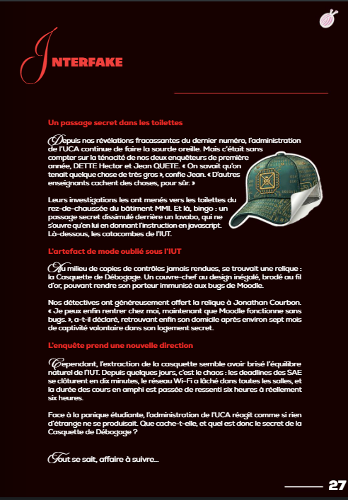
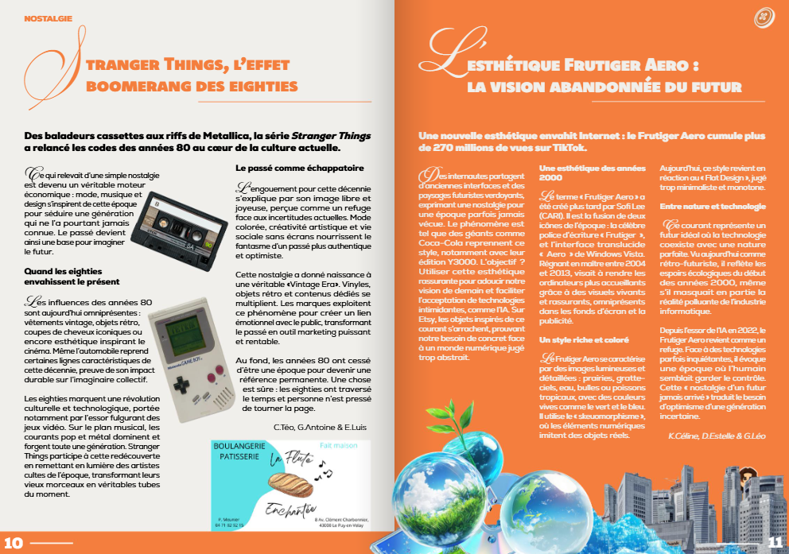

Magazine Interface
Concevoir, financer et faire paraître un magazine imprimé à 700 exemplaires en équipe en moins de deux semaines, tout en coordonnant la communication, la recherche de sponsors, la maquette et la rédaction.

Un magazine construit collectivement en temps record
Dans le cadre de ce projet étudiant, j'ai occupé le rôle de chef de projet au sein des commissions sponsors, communication et planification. Avec les autres chefs de groupe, j'ai participé aux réunions de coordination pour faire avancer les différents volets et mener le magazine à son terme en moins de deux semaines.
J'ai également contribué à la création de la maquette du magazine sous Adobe InDesign et rédigé un article publié sur le site d'Interface (« La Citroën Ami, meilleure copine des ados »).

Détourner les codes de la presse avec humour
Interfake est une rubrique imaginée par le pôle rédaction qui détourne les codes de l'article d'actualité pour inventer une fausse information humoristique (le passage secret dans les toilettes de l'IUT).
Ce travail de maquette demande la même rigueur typographique qu'un article sérieux (colonnes, lettrines, légendes, hiérarchie des titres) pour rendre le clin d'œil immédiatement crédible.
